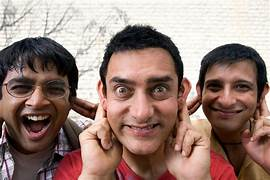
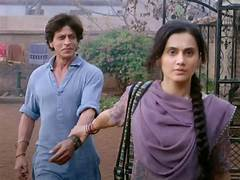
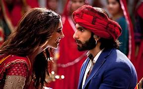

10 Most Popular TV Shows of 2023 and where to Watch Them
Five years after Netflix sarted releasing indian originals the streaming landscape in the country has divrsified like never before This applies to....
Most Popular Movies of 2023 and Where to Stream
As 2023 draws to a close,the indian streaming space records high numbers for some of the years biggest blockbusters and audience...

25 Best Aamir Khan Movies and Where to Watch Them
The face of versatility in mainstream Bollywood,Aamir Khan found early success in the tragic romance Qayamat Se Qayamat Tak and the......
15 best alia bhatt movies and where to Watch them
Nobody could have guessed Alia Bhatt’s dramatic range when she debuted as a spoilt schoolgirl in Karan Johar’s Student of the Year. With a gut-wrenching performance in her sophomore feature Highway, Bhatt proved that she was destined for greatness. With a stellar career including three Filmfare wins, supporting parts in record-breaking
10 movies to Watch after Animal and where to stram them
Dividing critics and audiences while minting money at the box office, Ranbir Kapoor’s Animal redefines mainstream action in Bollywood. The violent revenge saga directed by Sandeep Reddy Vanga (who had earlier courted controversy with Arjun Reddy and its Hindi remake Kabir Singh) finds Kapoor playing Rannvijay Singh, a man burdened by the toxic aggression of his father. But when his authoritarian father’s life is threatened, the morally grey protagonist wreaks havoc in Vanga’s blood-soaked thriller.

50 best shaha rukh khan movies and where to Watch them
Shah Rukh Khan. The very name is synonymous with Bollywood. Also fondly venerated as King Khan or SRK, Khan has carved a unique niche in the industry. From starting as a villainous supporting actor to a romantic leading man to joining the YRF Spy Universe, Khan continues to entertain fans not just in his home country but all around the world.
whwre to Watch the 15 best ranbir kapoor movies
Ranbir Kapoor has carved his niche in Bollywood by taking on mainstream projects like Brahmastra (2022) while challenging himself with the criminally underrated financial comedy Rocket Singh: Salesman of the Year (2009) and physically demanding performances in Sanju (2018) and, more recently, Animal (2023).
the 15 best thalapathy vijay movies and where to watch them
Fondly regarded as “Thalapathy” (loosely translated to Commander) by his legions of fans, Vijay has endured as one of the most mainstream faces of the Tamil film industry. Here’s a look at his career highlights.
from pinku to pathaan:
ranking the 20 best deepika padukone movies
Deepika Padukone has been a mainstay in Bollywood since 2007 and her career has only gone upwards ever since, establishing her among the industry’s highest-paid actors. From period pieces like Bajirao Masatani and Padmaavat to romantic dramas like Yeh Jawaani Hai Deewani
15 best alia bhatt movies and where to Watch them
The face of versatility in mainstream Bollywood,Aamir Khan found early success in the tragic romance Qayamat Se Qayamat Tak and the......
Lootera to Gully Boy: Ranking the 10 Best Ranveer Singh Movies
From his dynamic debut in Band Baaja Baarat to his numerous gritty collaborations with director Sanjay Leela Bhansali and co-star/wife Deepika Padukone, Ranveer Singh has carved his own multi-genre niche in Bollywood. While he also makes headlines for his hyperactive energy and bizarrely

Watch All the Dhoom Movies in Order
Dhoom was one of contemporary Bollywood’s first franchises, and its impact can still be felt in the Indian action genre. A studio known for its romances more than anything else, Yash Raj Films decided to enter the action genre when it greenlit Dhoom (2004). The heist thriller ended up igniting a craze for sports bikes in the country and turned John Abraham into a full-fledged star after he played the villainous biker gang leader Kabir Sharma.